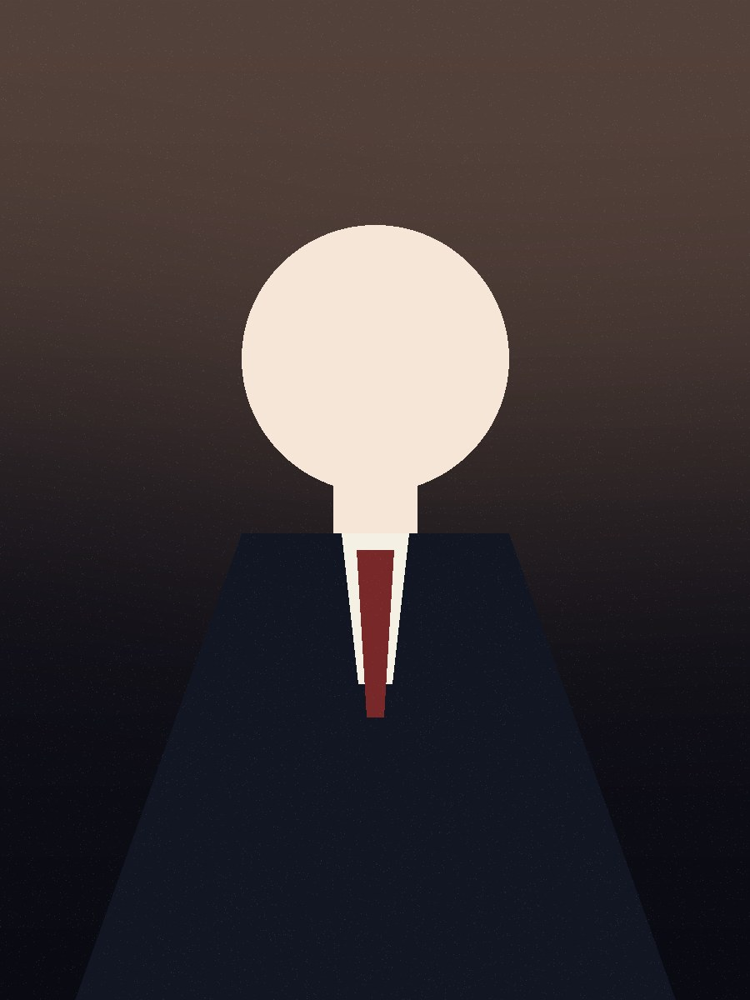

筑井 貴一
Kiichi Tsukui
Synthera 代表。学生起業家。組織の規模ではなく、ひとりがどれだけ泥臭く走れるか——その一点で勝負しています。

ひとりが、どれだけ
泥臭く走れるか.
2006年11月18日生まれ、大学在学中に Synthera を立ち上げました。学生という立場だからこそ取れるスピードと、世の中に負けない泥臭さ。組織の規模ではなく、ひとりの覚悟で走る——その姿勢こそが、Synthera の出発点であり、いちばんの武器です。
単一プラットフォームで、フォロワー 30万人。学生起業家のリアルなプロセス——AIを使った作業、営業メールの対応、プロダクト開発——を、そのまま Twitch で配信します。
リアルを、そのまま配信する.
きれいに編集された成功談ではなく、うまくいかない夜も含めた、起業の生のプロセスを。Twitch をホームに、切り抜きを YouTube / TikTok へ展開し、リーチを最大化していきます。
個人の知名度は、
事業の構造的レバレッジ.
代表が前に立つことそのものが、Synthera のマーケティング戦略の一部です。認知は、4つの方向に効きます。
オーガニックリーチ
広告費に頼らず、プロダクトとブランドが自然に届く土壌をつくる。
採用
価値観に共感した人が集まる。「この人と働きたい」が、最強の採用導線になる。
顧客獲得
信頼が先にある状態で商談に入れる。営業の成約率を、知名度が押し上げる。
ToSche のスケール
個人版 ToSche のユーザー獲得を、代表のフォロワーが直接支える。